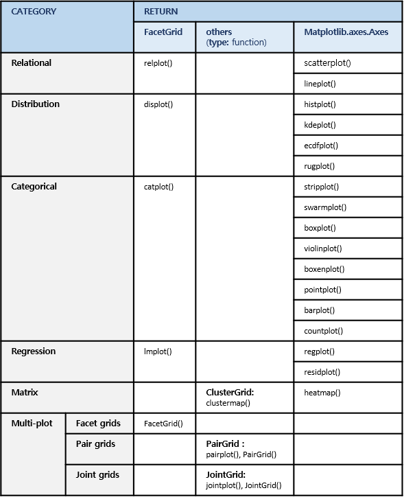
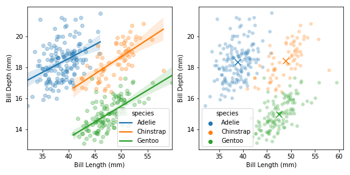

1. seaborn + matplotlib
- seaborn을 matplotlib과 섞어쓰는 방법입니다.
- 4부 중 첫 번째 시간입니다.
- seaborn 함수 중 matplotlib axes를 반환하는 함수들에 관한 내용입니다.
seaborn은 matplotlib을 쉽고 아름답게 쓰고자 만들어졌습니다.
- 따라서 seaborn의 결과물은 당연히 matplotlib의 결과물입니다.
- 그러나 간혹 seaborn이 그린 그림의 폰트, 색상에 접근이 되지 않아 난처합니다.
- seaborn의 구조를 잘 이해하지 못하면 해결도 어렵습니다.
v0.11 기준으로 seaborn에는 다음 함수들이 있습니다.

- matplotlib의 출력물은
figure와axes만을 반환합니다.- seaborn의 명령어 중
axes를 반환하는 것들은 matplotlib과 섞어 쓰기 좋습니다. - 먼저 matplotlib의 객체 지향
object orientedinterface를 사용해서 그림의 틀을 만든 뒤, - 특정
axes에 seaborn을 삽입하면 됩니다. - 결론적으로, 하고 싶은 거 다 됩니다.
- seaborn의 명령어 중
1.1. Load data
- 예제로 사용할 펭귄 데이터를 불러옵니다.
- seaborn에 내장되어 있습니다.
1
2
3
4
5
6import pandas as pd
import matplotlib.pyplot as plt
import seaborn as sns
penguins = sns.load_dataset("penguins")
penguins.head()
1.2. figure and axes
- matplotlib으로 도화지
figure를 깔고 축공간axes를 만듭니다. - 1 x 2 축공간을 구성합니다.
1
2
3fig, axes = plt.subplots(ncols=2, figsize=(8,4))
fig.tight_layout()
1.3. plot with matplotlib
- matplotlib 기능을 이용해서 산점도를 그립니다.
- x축은 부리 길이
bill length - y축은 부리 위 아래 두께
bill depth - 색상은 종
species로 합니다.
Adelie, Chinstrap, Gentoo이 있습니다.
- x축은 부리 길이
- 두 축공간 중 왼쪽에만 그립니다.
1
2
3
4
5
6
7
8
9
10
11
12
13
14
15fig, axes = plt.subplots(ncols=2, figsize=(8, 4))
species_u = penguins["species"].unique()
# plot 0 : matplotlib
for i, s in enumerate(species_u):
axes[0].scatter(penguins["bill_length_mm"].loc[penguins["species"]==s],
penguins["bill_depth_mm"].loc[penguins["species"]==s],
c=f"C{i}", label=s, alpha=0.3
)
axes[0].legend(species_u, title="species")
axes[0].set_xlabel("Bill Length (mm)")
axes[0].set_ylabel("Bill Depth (mm)")
fig.tight_layout()
1.4. plot with seaborn
- 이번엔 같은 plot을 seaborn으로 그려봅니다.
- 위 코드에 아래 세 줄만 추가합니다.
1
2
3
4# plot 1 : seaborn
sns.scatterplot("bill_length_mm", "bill_depth_mm", hue="species", data=penguins, alpha=0.3, ax=axes[1])
axes[1].set_xlabel("Bill Length (mm)")
axes[1].set_ylabel("Bill Depth (mm)")
- 단 세 줄로 거의 동일한 그림이 나왔습니다.
- scatter plot의 점 크기만 살짝 작습니다.
- label의 투명도만 살짝 다릅니다.
- seaborn 명령
scatterplot()을 그대로 사용했습니다. - x축과 y축 label도 바꾸었습니다.
ax=axes[1]인자에서 볼 수 있듯, 존재하는axes에 그림만 얹었습니다.- matplotlib 틀 + seaborn 그림 이므로, matplotlib 명령이 모두 통합니다.
1.5. matplotlib + seaborn & seaborn + matplotlib
matplotlib과 seaborn이 자유롭게 섞일 수 있습니다.
- matplotlib 산점도 위에 seaborn 추세선을 얹을 수 있고,
- seaborn 산점도 위에 matplotlib 중심점을 얹을 수 있습니다.
파이썬 코드는 다음과 같습니다.
1
2
3
4
5
6
7
8
9
10
11
12
13
14
15
16
17
18
19
20
21
22
23
24
25
26
27
28
29
30
31
32
33
34fig, axes = plt.subplots(ncols=2, figsize=(8, 4))
species_u = penguins["species"].unique()
# plot 0 : matplotlib + seaborn
for i, s in enumerate(species_u):
# matplotlib 산점도
axes[0].scatter(penguins["bill_length_mm"].loc[penguins["species"]==s],
penguins["bill_depth_mm"].loc[penguins["species"]==s],
c=f"C{i}", label=s, alpha=0.3
)
# seaborn 추세선
sns.regplot("bill_length_mm", "bill_depth_mm", data=penguins.loc[penguins["species"]==s],
scatter=False, ax=axes[0])
axes[0].legend(species_u, title="species")
axes[0].set_xlabel("Bill Length (mm)")
axes[0].set_ylabel("Bill Depth (mm)")
# plot 1 : seaborn + matplotlib
# seaborn 산점도
sns.scatterplot("bill_length_mm", "bill_depth_mm", hue="species", data=penguins, alpha=0.3, ax=axes[1])
axes[1].set_xlabel("Bill Length (mm)")
axes[1].set_ylabel("Bill Depth (mm)")
for i, s in enumerate(species_u):
# matplotlib 중심점
axes[1].scatter(penguins["bill_length_mm"].loc[penguins["species"]==s].mean(),
penguins["bill_depth_mm"].loc[penguins["species"]==s].mean(),
c=f"C{i}", alpha=1, marker="x", s=100
)
fig.tight_layout()
1.6. seaborn + seaborn + matplotlib
- 안 될 이유가 없습니다.
- seaborn
scatterplot+ seabornkdeplot+ matplotlibtext입니다.1
2
3
4
5
6
7
8
9
10
11
12
13
14
15
16
17
18
19
20fig, ax = plt.subplots(figsize=(6,5))
# plot 0: scatter plot
sns.scatterplot("bill_length_mm", "bill_depth_mm", color="k", data=penguins, alpha=0.3, ax=ax, legend=False)
# plot 1: kde plot
sns.kdeplot("bill_length_mm", "bill_depth_mm", hue="species", data=penguins, alpha=0.5, ax=ax, legend=False)
# text:
species_u = penguins["species"].unique()
for i, s in enumerate(species_u):
ax.text(penguins["bill_length_mm"].loc[penguins["species"]==s].mean(),
penguins["bill_depth_mm"].loc[penguins["species"]==s].mean(),
s = s, fontdict={"fontsize":14, "fontweight":"bold","color":"k"}
)
ax.set_xlabel("Bill Length (mm)")
ax.set_ylabel("Bill Depth (mm)")
fig.tight_layout()
1.7. 결론
- seaborn을 matplotlib과 마음껏 섞어쓰세요
- 단,
axes를 반환하는 명령어에 한해서 말입니다. - 이런 명령어를
axes-level function이라고 합니다.